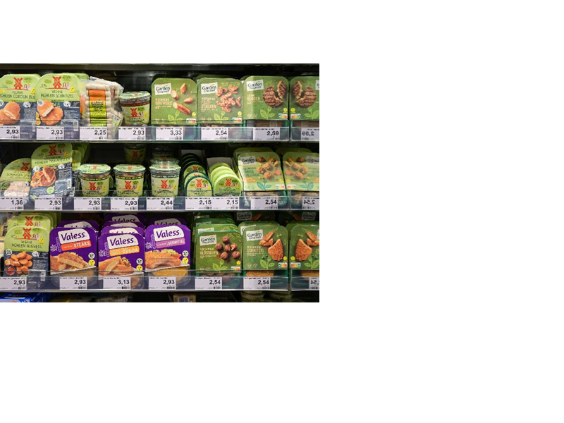

Veganismus. Ein Thema, das sehr viele Menschen auf der ganzen Welt beschäftigt. In Deutschland ernähren sich bereits 1,6 Millionen Menschen vegan und somit rein pflanzlich. Vegan zu leben ist sehr gesund und befriedigt viele Menschen mit ihrem Gewissen. Supermärkte haben bereits eine große Auswahl an pflanzlichen Ersatzprodukten, was die vegane oder vegetarische Lebensumstellung erleichtert.
1 Milliarden Menschen, das ist die Anzahl der vegan und vegetarisch Lebenden auf der Welt. Davon leben etwa 7,5 Millionen in Deutschland. Der Unterschied zwischen vegan und vegetarisch besteht darin, dass Veganer komplett auf tierische Produkte verzichten, Vegetarier aber nur auf Fleisch und Fisch verzichten, Milch, Eier, Honig etc. stehen dabei also immer noch auf dem Speiseplan. Die Zahl der Veganer und Vegetarier steigt auf der ganzen Welt. Die Gründe, vegan oder vegetarisch zu leben, sind sehr überzeugend. Der wichtigste Faktor dabei ist die Gesundheit: Schlaganfälle, Krebserkrankungen oder Herzerkrankungen werden durch den Verzicht auf Fleisch vorgebeugt. Ein weiterer Faktor ist auch das Massensterben der Tiere für Fleisch, das anschließend in verschiedensten Formen im Supermarkt zum Verkauf steht. Vielen Menschen fällt es schwer auf Fleisch oder tierische Produkte zu verzichten, sie haben oftmals Vorurteile. Dabei sind Vitaminmangel, keine ausgewogene Ernährung, “Veganes Leben ist teuer”, die häufigsten Vorurteile. Wer vegan oder vegetarisch leben will, muss nicht zwingend auf den Geschmack von einem Schnitzel, Käse oder Salami verzichten. Supermärkte stellen bereits eine große Auswahl an Ersatzprodukten zur Verfügung. Ich habe auch schon öfter vegane Schnitzel oder vegane Chicken-Nuggets probiert und ich kann sagen, dass der Geschmack fast identisch ist und häufig sogar besser schmeckt. Der Preis der Ersatzprodukte ist teurer als die tierischen Produkte und somit ist das Argument “veganes Leben ist teuer” wahr.
Vegane Produkte:
Immer mehr Menschen entscheiden sich dazu, auf Fleisch oder ganz auf tierische Produkte zu verzichten. Die Auswahl an Ersatzprodukten in deutschen Supermärkten wird demnach immer größer und vielseitiger.
Mittlerweile ernähren sich ca. 2% der Menschen in Deutschland vegetarisch, ein Zehntel davon sogar vegan. Auf tierische Produkte zu verzichten ist heutzutage bei weitem nicht mehr so schwer wie früher. Im Supermarkt gibt es für viele tierische Produkte pflanzliche Alternativen. So kann man sich zwischen veganem Schnitzel, Hack / Bratwurst / Gyros und vielem mehr entscheiden, wenn man kein echtes Fleisch essen möchte. Die Auswahl an veganen Milchprodukten ist in den letzten Jahren auch sehr gestiegen. Es gibt verschiedene pflanzliche Käsesorten, Jogurt-Sorten und eine Menge verschiedene “Milche”. Sogar Dinge wie ein “Veganes Ei” findet man in der Backabteilung bei vielen Läden. Auch Menschen, die sich nicht komplett vegan oder vegetarisch ernähren, greifen gerne auf diese Produkte zurück, um Tierleben zu schützen und etwas für ihre Gesundheit zu tun.
Quelle: https://www.google.de/search?q=veganes+Supermarktregal&safe=strict&source=lnms&tbm=isch&sa=X&ved=2ahUKEwjGpa6VrsvxAhU3hP0HHdU7D68Q_AUoAnoECAEQBA&biw=1920&bih=985#imgrc=vSCoyzLwyNruwM